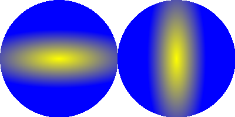

EllipticalGradient()
语法
EllipticalGradient(x, y, RadiusX, RadiusY)概要
Sets the drawing gradient to have an elliptical shape.
参数
x, y 在该位置应用当前背景颜色。 RadiusX, RadiusY The radius around in the x and y direction at which to apply the current front color.
返回值
无.
备注
添加渐变色请使用GradientColor（）命令。
注：此命令只能与ImageOutput（）和CanvasOutput（）一起使用才有效果。。当使用 DrawingMode() 设置了#PB_2DDrawing_Gradient时渐变只影响绘图命令。
示例
If OpenWindow(0, 0, 0, 400, 200, "2DDrawing Example", #PB_Window_SystemMenu | #PB_Window_ScreenCentered) If CreateImage(0, 400, 200) And StartDrawing(ImageOutput(0)) Box(0, 0, 400, 200, $FFFFFF) DrawingMode(#PB_2DDrawing_Gradient) BackColor($00FFFF) FrontColor($FF0000) EllipticalGradient(100, 100, 150, 50) Circle(100, 100, 100) EllipticalGradient(300, 100, 50, 150) Circle(300, 100, 100) StopDrawing() ImageGadget(0, 0, 0, 400, 200, ImageID(0)) EndIf Repeat Event = WaitWindowEvent() Until Event = #PB_Event_CloseWindow EndIf

参阅
GradientColor(), ResetGradientColors(), LinearGradient(), CircularGradient(), BoxedGradient(), ConicalGradient(), CustomGradient(), DrawingMode()
已支持操作系统
所有